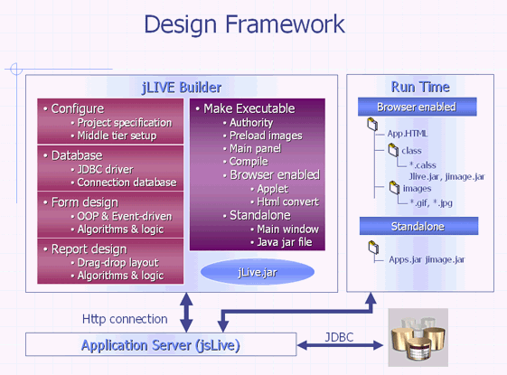

|
3 專案開發程序 (project develop procedure) 應用程式系統開發程序 (application develop procedure) jLIVE Builder™ 程式設計概念 (programming concept)
jLIVE Builder™ 應用程式開發環境 (develop environment) 是以應用程式實際執行 (run time environment) 時的三層式架構 (3-tiers) 直接設計，所以進入 jLIVE Builder™ 系統前，請先檢查 jLIVE ™ middle ware 是否已經啟動，以及所要操作的資料庫是否已經就緒。應用程式的開發流程，首先新增建立應用程式 (application)，設定應用程式的組態 (configuration) 和屬性 (properties)；新增建立資料庫系統，連結、測試操作的資料庫系統；新增建立視窗畫面，設計應用程式操作視窗模組；設計應用系統所需的報表作業 (report) ；最後將設計的模組製作成應用程式 (build)。製作應用程式時，可以選擇以瀏覽器啟動 (browser enabled) 或製作成可獨立執行 (stand alone) 的程式或設定 JNLP (Java Network Launching Protocol) 資料以 Java web start 執行。在製作前，可以選擇是否要加入授權管理的機制 (authorized security control)，系統將會加入 (plug in) 所需要的資料庫檔案及維護管理安全機制的視窗畫面，有經驗的設計師可以進一步的修改以符合個別的應用需求。
應用程式系統開發程序 (application develop procedure)
 應用程式組態設定 (application configuration) 啟動jLIVE
Builder™
，應用程式控制面版位於左邊，右邊則是相對的說明及屬性設定頁。選取控制面版的【應用程式】節點，按選新增應用程式說明頁的新增應用程式鍵，填入應用程式屬性值，新增一應用程式。控制面版在此新增的【應用程式】節點下，將會加入【資料庫】【視窗】及【執行】等三個節點。 參閱 新增建立應用程式 (create new application)。
資料庫系統連結設定 (database connection) 在【資料庫】的節點下可以新增多個不同系統的資料庫，每個資料庫皆以別名 (alias) 命名，在應用程式設計時，將以此別名參用此資料庫系統。如果設計時不使用資料庫系統的特殊功能，例如：預儲程序(stored procedure)，基本上設計一個應用程式，可以適用於各種不同的資料庫系統，換句話說，更換或升級資料庫系統時，可以不需更改程式。 參閱 新增建立資料庫 (create new database)。
在【視窗】的節點下新增視窗，每一個視窗都會產生一個 XML 檔，記錄設計的所有程式邏輯與程序。製作執行程式時，系統會按 XML 中的記錄，產生 Java™ source code，有經驗的 Java™ 程式設計師，可以在系統編譯 (compile) 成 class 檔前，按需求更改或加入 Java™ code。jLIVE™ 應用程式是以編譯 (compile) 後的 class 檔執行。
jLIVE Builder™ 的報表是依附在視窗 (form) 之下，因為報表作業，大都是經過使用者查詢後 (query) 再進行列印，所以報表的啟動列印 (printing) 或預覽 (preview) ，是安置 (build in) 在視窗畫面 (form) 的列印事件中。 jLIVE Builder™ 的報表系統是和視窗畫面 (form) 共享資料來源，所有視窗畫面 (form) 的元件內含值，都是可計算也可列印的資料。新增報表時，在【報表】的節點下選擇新增，每一個報表都會產生一個XML檔，記錄報表設計的所有列印邏輯與程序，製作成執行程式時，會按 XML 中的記錄產生 Java™ source code，有經驗的 Java™ 程式設計師，可以在系統編譯 (compile) 成 class 檔前，按需求更改或加入 Java™ code。jLIVE Builder™ 是以編譯 (compile) 後的 class 檔執行。
jLIVE Builder™ 可以同時建立以瀏覽器啟動 (browser enabled HTML) 和獨立執行 (standalone executable JAR) 或以Java web start™ (Java web start™ JNLP) 啟動 的應用程式，其製作 (build) 的方式是一樣的。以瀏覽器啟動 (browser enabled) 的應用程式，系統會自動產生，啟動的 HTML 網頁以及內含的 Java™ applet class 的程式碼，設計師必須指定開啟應用程式的主視窗，和在瀏覽器中的大小。設計師可以選擇是否要重導 Java™ JRE 的來源位置或由預設的 Sun 網站。設計師自行開發或其他廠商客製化的程式檔 (customer jar)，可經由 jLIVE Builder™ 所製作的 HTML 檔，在使用者執行的時候自動下載至使用者端 (client) 。獨立執行 (standalone executable) 的應用程式，系統會自動產生，執行時的主視窗框架，設計師可指定初始框架的大小、狀態及標題，其餘的設定與以瀏覽器啟動的應用程式相同。以 Java web start™ (Java web start™ JNLP) 啟動的應用程式需設定 JNLP (Java Network Launching Protocol) ，系統會產生 Java web start™ 執行期所需的應用程式 JNLP 檔。 按選建立執行程式鍵 (製作應用程式)，精靈輔助視窗會出現，讓設計者選擇製作的方式，如果設計師修改過原始檔(Java™ source code)，請選擇編譯程式 (compile java™ --> class)，如果選擇建立程式 (XML --> Java --> class)，jLIVE Builder™ 將從 XML 重新製作原始檔(Java™ source code)，設計師修改過的程式碼，將會被標示為註解，並搬移至程式最後段。 參閱 製作應用程式 (build application)。
選用授權管理機制 (authorized security control) jLIVE Builder™ 授權控管機制，是使用查驗後端資料庫的方式進行管理。應用程式開發者可以選擇自行管控或由 jLIVE Builder™ 授權控管機制進行使用者權限管理。系統會在資料庫建立起七個相關的資料表格 (tables) ，及四個權限管理視窗模組 (forms)。授權的方式，以建立各種層級的任務角色 (roles)，並對每一個任務角色分別授予可開啟的視窗畫面，及其是否在此視窗畫面可以擁有操作新增(insert) 、刪除 (delete)、編輯 (update)、查詢 (query)、列印 (print) 的權限 (authorized)。應用程式執行時，管理者 (administrator) 可以對每一個使用者 (user)，授予使用系統的任務角色 (roles)，及登入的名稱、密碼。 jLIVE™ 應用程式在執行時，會自動將未授權的相關元件 (components)、功能 (functions) 使其失效 (disabled)。此一授權控管機制，讓程式設計師在開發程式時，可以專注於資料流程與商業邏輯，應用程式執行時，授權管理人員可以機動性授予存取權限，整個應用程式的開發與管理可以達到最佳的效率。 參閱 授權管理機制 (authorized security control) 。
Copyright © 2001~ 2004 Probe Technology . All Rights Reserved. Questions, comments, and suggestions to Service@probe.com.tw |